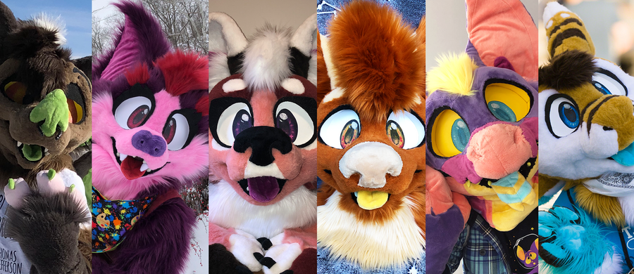
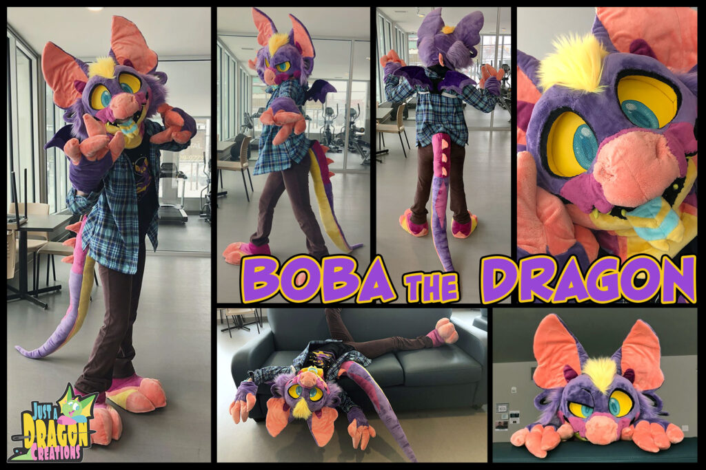
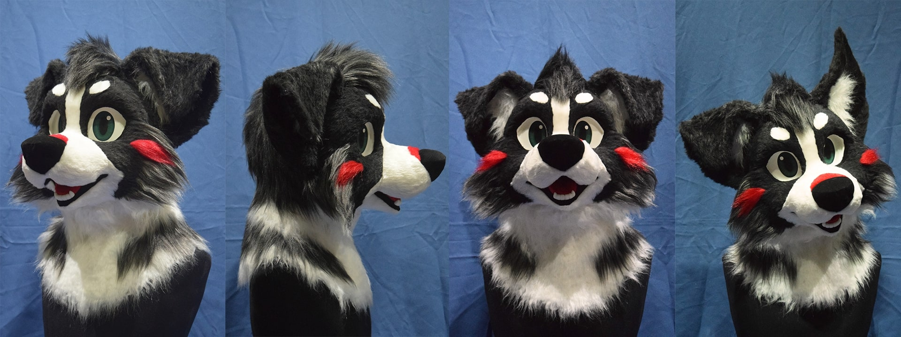
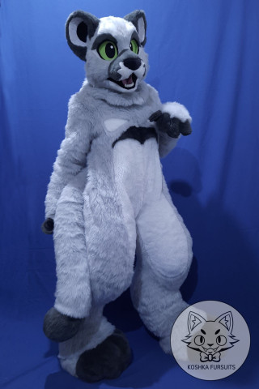
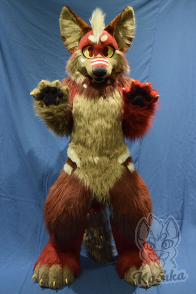

Welcome to Dewside
Fursuits
Fursuits can be quite the undertaking. A professionally commissioned suit can run you thousands of dollars, and a homemade one can take several months to contruct.
My Personal List of Fursuit Makers
 
Website
Prices:
Head: Starts at $700 (expected final price: $950)
Partial: Starts at $900 (expected final price: $1,100)
Full digitigrade: Starts at 2,000 (expected final price: $2,500)
Notes: I love the expressive and extreme toony style these suits boast! The maker's Instagram page states that you can request a sketch of your character in the style while getting a quote to see if it fits or not, so I most likely will me doing that. They don't offer plantigrade, which is okay because I don't want it at all, but I don't think I've seen many makers out there who skip it entirely. The fullbody price is a little steep for what I'm going for, so if I DO fall in love with the style, I'm going for a partial.
  
Website
Prices:
Head: Starts at $500
Partial: Starts at $900
Full digitigrade: Starts at $1,600
Notes: Wow! What great prices! I'm definitely going full digitigrade if I go with Koshka. I think that the cat muzzle they used for Toboshiro (see below) would work well on Oddball!